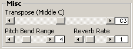

Misc Controls

These are just some leftover controls that I threw under "Misc".
Transpose
This determines the pitch of the note that sounds at middle C on the keyboard.
Pitch Bend Range
This determines how much the pitch bend wheel will affect the sound.
Reverb Rate
This is kind of a weird affect that emulates reverb by slowing down the release
rates of the envelopes. When the envelope is fading out in the release stage,
and the OP1 EG level gets down to -18dB, the Reverb Rate setting will kick in
and slow down the release rates for all operators. The '1' setting is the
slowest and '7' is the fastest.